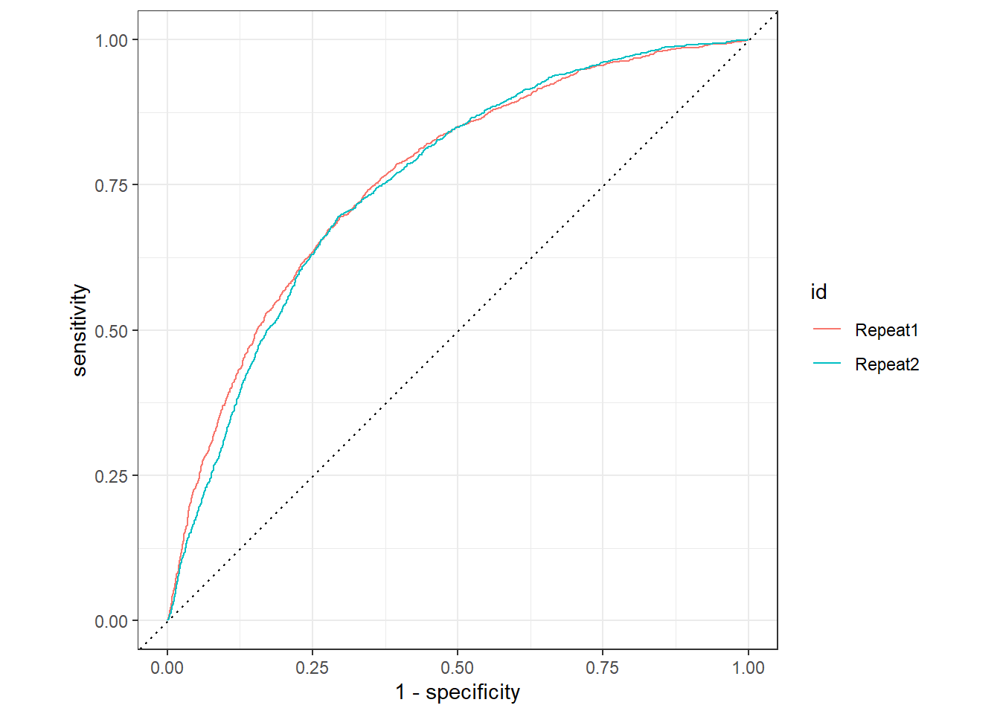
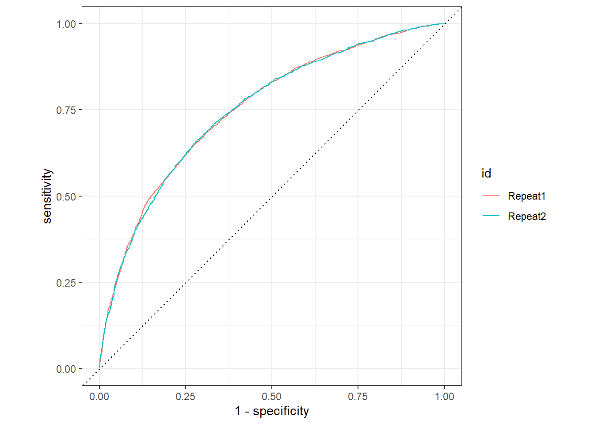
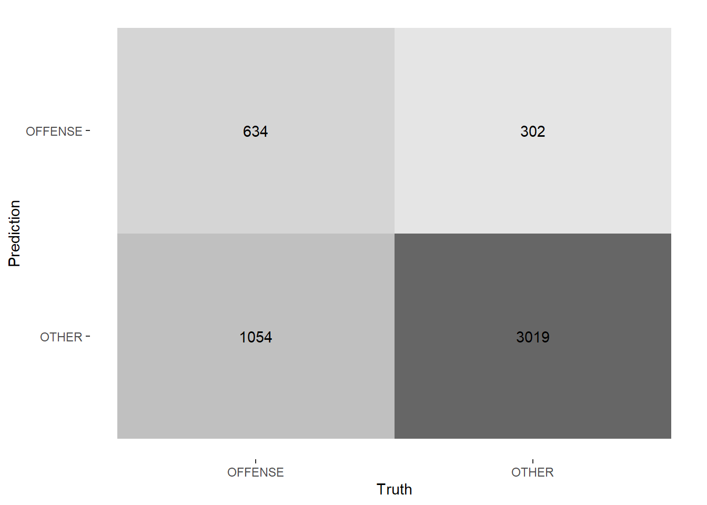
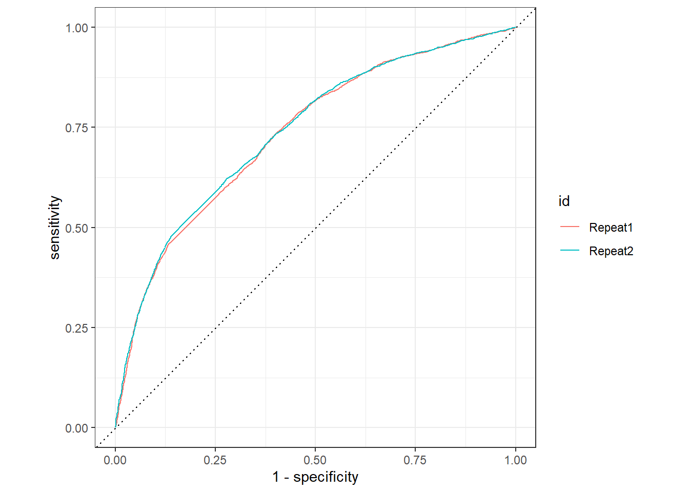
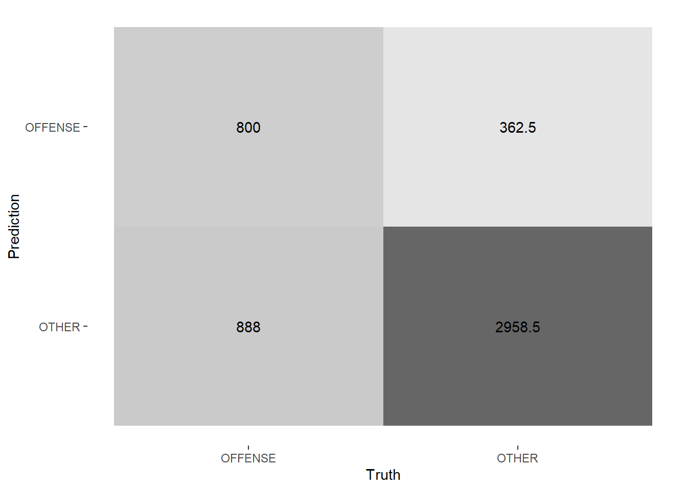
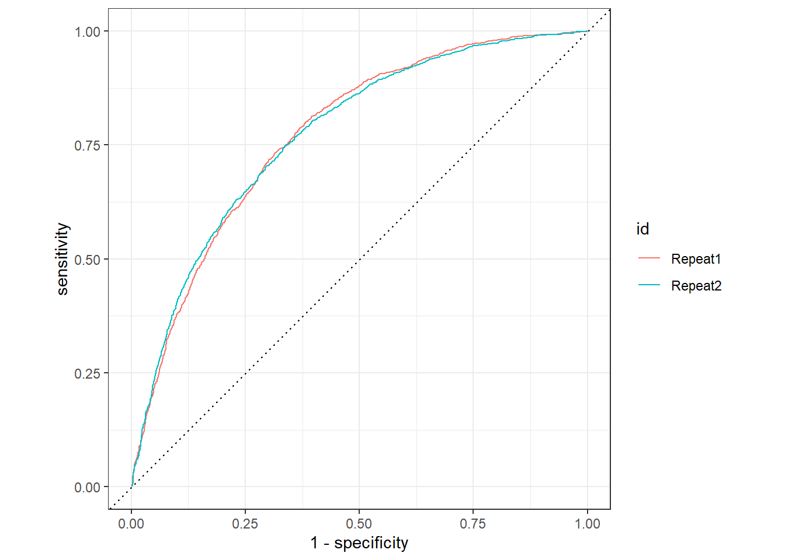
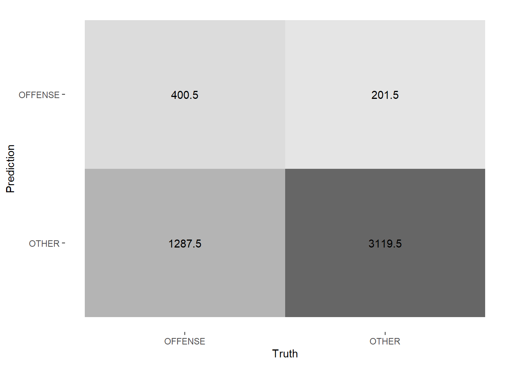

library(tidyverse)
library(rio)
library(tidymodels)
library(tidytext)
library(textrecipes)
library(lsa)
library(discrim)
library(naivebayes)
library(tictoc)
library(fastrtext)
library(remoji)
library(tokenizers)1. Preliminary Note
For this analysis we use the dataset from Wiegand (2019a) out of the zip archive Wiegand (2019b). The data are licensed according to Attribution 4.0 International (CC-BY-4.0).
The picture to this post from the welcome page, is from Gerd Altmann at Pixabay
2. Load The Packages
3. Load Dataset And Minor Changes
3.1 Train Dataset
d_train <- read_tsv("C:/Users/sapi-/OneDrive/Studium/5. Semester/Data Science II/Data_Science_Blog/daten/germeval2018.training.txt", col_names = FALSE)Rename Columns
names(d_train) <- c("text", "c1", "c2")Add ID Column
d_train <- d_train %>%
mutate(id = row_number()) %>%
select(id, everything())4. Explore Dataset
train_toc <- d_train %>%
unnest_tokens(output = token, input = text)
train_toc# A tibble: 100,217 x 4
id c1 c2 token
<int> <chr> <chr> <chr>
1 1 OTHER OTHER corinnamilborn
2 1 OTHER OTHER liebe
3 1 OTHER OTHER corinna
4 1 OTHER OTHER wir
5 1 OTHER OTHER würden
6 1 OTHER OTHER dich
7 1 OTHER OTHER gerne
8 1 OTHER OTHER als
9 1 OTHER OTHER moderatorin
10 1 OTHER OTHER für
# ... with 100,207 more rowsFirst tokenize the dataset d_train.
4.1 Insert Stopwords_de
data(stopwords_de, package = "lsa")
stopwords_de <- tibble(word = stopwords_de)
stopwords_de <- stopwords_de %>%
rename(token = word)After that we use the stopwords_de to
anti_jointhis with train_toc dataset.
train_toc2 <- train_toc %>%
anti_join(stopwords_de)Joining, by = "token"Show The Important Words
train_toc2 <- train_toc2 %>%
count(token, sort = TRUE)Plot
train_toc2 %>%
slice_head(n=20) %>%
ggplot()+
aes(y=reorder(factor(token), n), x = n, color = token)+
geom_col(aes(fill = token, alpha = 2.5)) +
ggtitle("The Most Used Words") +
ylab("Token")+
xlab("Quantity")+
theme_minimal()+
theme(legend.position = "none")
We see that the most used word is “lbr”. We could inspect the dataset way deeper, e.g. do a manual sentimentanalysis, do a lemmatization or stem the words. But we will have a look at these processes in the different machine learning algorithms following now.
5. Preparation
5.1 Define Recipe - rec1 - TF-IDF
rec1 <-
recipe(c1 ~ ., data = select(d_train, text, c1, id)) %>%
update_role(id, new_role = "id") %>%
step_tokenize(text) %>%
step_stopwords(text, language = "de", stopword_source = "snowball") %>%
step_stem(text) %>%
step_tfidf(text) %>%
step_normalize(all_numeric_predictors())
rec1Recipe
Inputs:
role #variables
id 1
outcome 1
predictor 1
Operations:
Tokenization for text
Stop word removal for text
Stemming for text
Term frequency-inverse document frequency with text
Centering and scaling for all_numeric_predictors()Prep & Bake - rec1
rec1_prep <- rec1 %>%
prep() %>%
recipes::bake(new_data = NULL)5.2 Define Recipe - rec2 - word embedding
Due to the long calculation time and the relatively poor roc_auc values (with the training resample - v = 2, repeats = 1) , I decided not to perform the calculation for the analysis.
#rec2 <-
#recipe(c1 ~ ., data = select(d_train, text, c1, id)) %>%
#update_role(id, new_role = "id") %>%
#step_tokenize(text) %>%
#step_stopwords(text, language = "de", stopword_source = "snowball") %>%
#step_word_embeddings(text, embeddings = word_embedding_text)5.3 Define Recipe - rec3 - Word Embeddings
Insert The Helperfunctions
We are using the package pradadata by Sauer (2018). The data are licensed according to General Public License 3 (GLP-3).
data("schimpwoerter", package = "pradadata")
data("sentiws", package = "pradadata")
data("wild_emojis", package = "pradadata")
source("C:/Users/sapi-/OneDrive/Studium/5. Semester/Data Science II/Data_Science_Blog/helper/helper_funs.R")Insert The Predefined Word Embedding List
The used word embeddings are from Grave et al. (2018). The data are licensed according to Attribution-ShareAlike 3.0 Unported (CC-BY-SA 3.0).
out_file_model <- "C:/Users/sapi-/OneDrive - Hochschule für Angewandte Wissenschaften Ansbach/Desktop/AWM/angewandte Wirtschats- und Medienpsychologie/5. Semester/Word_Embedding/de.300.bin"file.exists(out_file_model)[1] TRUEfasttext_model <- load_model(out_file_model)
dictionary <- get_dictionary(fasttext_model)
get_word_vectors(fasttext_model, c("menschen")) %>% `[`(1:10) [1] -0.043737594 -0.033647023 -0.016398411 0.037433818 0.029863771
[6] -0.008217440 0.002691153 -0.027484305 -0.058012061 0.004103063print(head(dictionary, 10)) [1] "," "." "</s>" "und" "der" ":" "die" "\"" ")" "(" word_embedding_text <- tibble(word = dictionary)options(mc.cores = parallel::detectCores())
words_vecs <- get_word_vectors(fasttext_model)word_embedding_text <-
word_embedding_text %>%
bind_cols(words_vecs)names(word_embedding_text) <- c("word", paste0("v", sprintf("%03d", 1:301)))rec3
rec3 <-
recipe(c1 ~., data = select(d_train, text, c1, id)) %>%
update_role(id, new_role = "id") %>%
step_text_normalization(text) %>%
step_mutate(emo_count = map_int(text, ~count_lexicon(.x, sentiws$word))) %>%
step_mutate(schimpf_count = map_int(text, ~count_lexicon(.x, schimpfwoerter$word))) %>%
step_mutate(wild_emojis = map_int(text, ~count_lexicon(.x, wild_emojis$emoji))) %>%
step_mutate(text_copy = text) %>%
step_textfeature(text_copy) %>%
step_tokenize(text) %>%
step_stopwords(text, language = "de", stopword_source = "snowball") %>%
step_stem(text) %>%
step_word_embeddings(text, embeddings = word_embedding_text)Prep & Bake - rec3
rec3_prep <- rec3 %>%
prep() %>%
recipes::bake(new_data = NULL)5.4 Define Recipe - rec4 - TF-IDF
rec4
rec4 <-
recipe(c1 ~., data = select(d_train, text, c1, id)) %>%
update_role(id, new_role = "id") %>%
step_text_normalization(text) %>%
step_mutate(emo_count = map_int(text, ~count_lexicon(.x, sentiws$word))) %>%
step_mutate(schimpf_count = map_int(text, ~count_lexicon(.x, schimpfwoerter$word))) %>%
step_mutate(wild_emojis = map_int(text, ~count_lexicon(.x, wild_emojis$emoji))) %>%
step_mutate(text_copy = text) %>%
step_textfeature(text_copy) %>%
step_tokenize(text) %>%
step_stopwords(text, language = "de", stopword_source = "snowball") %>%
step_stem(text) %>%
step_tfidf(text)Prep & Bake - rec4
rec4_prep <- rec4 %>%
prep() %>%
recipes::bake(new_data = NULL)6. Build Resamples
I chose the v-fold-cross-validation as it is rather time-efficient. Other resampling methods are for example bootstrapping, leave-one-out-cross-validation or hold-out-cross-validation.
For the training I have used v = 2 and repeats = 1. The advantage is, you can train the dataset without such a long calculation time.
folds <- vfold_cv(data = d_train,
v = 3,
repeats = 2,
strata = c1)7. Build the Penalty-Grid
lambda_grid <- grid_regular(penalty(), levels = 25)8. Build the Models
8.1 Null Model
8.2 Lasso-L1 With TF-IDF
According to the large amount of data, I decided to not run the Null Model and the L1-TF-IDF with rec1.
8.3 Ridge-Regression-L2 With TF-IDF
L2-Model
l2_83_mod <- logistic_reg(penalty = tune(), mixture = 0) %>%
set_engine("glmnet") %>%
set_mode("classification")
l2_83_modLogistic Regression Model Specification (classification)
Main Arguments:
penalty = tune()
mixture = 0
Computational engine: glmnet Define The Workflow
l2_83_wf <-workflow() %>%
add_recipe(rec1) %>%
add_model(l2_83_mod)
l2_83_wf== Workflow ====================================================================
Preprocessor: Recipe
Model: logistic_reg()
-- Preprocessor ----------------------------------------------------------------
5 Recipe Steps
* step_tokenize()
* step_stopwords()
* step_stem()
* step_tfidf()
* step_normalize()
-- Model -----------------------------------------------------------------------
Logistic Regression Model Specification (classification)
Main Arguments:
penalty = tune()
mixture = 0
Computational engine: glmnet Resampling & Model Quality
options(mc.cores = parallel::detectCores())
l2_83_wf_fit <- tune_grid(
l2_83_wf,
folds,
grid = lambda_grid,
control = control_resamples(save_pred = TRUE)
)Warning: Paket 'stopwords' wurde unter R Version 4.1.3 erstelltWarning: Paket 'glmnet' wurde unter R Version 4.1.3 erstelltWarning: Paket 'Matrix' wurde unter R Version 4.1.3 erstelltx Fold3, Repeat1: preprocessor 1/1, model 1/1: Error: kann Vektor der Größe 324.7 MB nicht allozierenModel Performance
l2_83_wf_fit_performance <- collect_metrics(l2_83_wf_fit)
l2_83_wf_fit_performance# A tibble: 50 x 7
penalty .metric .estimator mean n std_err .config
<dbl> <chr> <chr> <dbl> <int> <dbl> <chr>
1 1 e-10 accuracy binary 0.708 5 0.00370 Preprocessor1_Model01
2 1 e-10 roc_auc binary 0.756 5 0.00603 Preprocessor1_Model01
3 2.61e-10 accuracy binary 0.708 5 0.00370 Preprocessor1_Model02
4 2.61e-10 roc_auc binary 0.756 5 0.00603 Preprocessor1_Model02
5 6.81e-10 accuracy binary 0.708 5 0.00370 Preprocessor1_Model03
6 6.81e-10 roc_auc binary 0.756 5 0.00603 Preprocessor1_Model03
7 1.78e- 9 accuracy binary 0.708 5 0.00370 Preprocessor1_Model04
8 1.78e- 9 roc_auc binary 0.756 5 0.00603 Preprocessor1_Model04
9 4.64e- 9 accuracy binary 0.708 5 0.00370 Preprocessor1_Model05
10 4.64e- 9 roc_auc binary 0.756 5 0.00603 Preprocessor1_Model05
# ... with 40 more rowsl2_83_wf_fit_preds <- collect_predictions(l2_83_wf_fit)l2_83_wf_fit_preds %>%
group_by(id) %>%
roc_curve(truth = c1, .pred_OFFENSE) %>%
autoplot()
There is a small difference between both repetitions.
Select The Best
chosen_auc_l2_83_wf_fit <-
l2_83_wf_fit %>%
select_by_one_std_err(metric = "roc_auc", -penalty)
chosen_auc_l2_83_wf_fit# A tibble: 1 x 9
penalty .metric .estimator mean n std_err .config .best .bound
<dbl> <chr> <chr> <dbl> <int> <dbl> <chr> <dbl> <dbl>
1 1 roc_auc binary 0.757 5 0.00593 Preprocessor1_Mod~ 0.757 0.751Positive Predictive Value
ppv(l2_83_wf_fit_preds, truth = factor(c1), estimate = .pred_class)# A tibble: 1 x 3
.metric .estimator .estimate
<chr> <chr> <dbl>
1 ppv binary 0.6388.4 Lasso-L1 With Word Embeddings
Like the Null Model (8.1) and the L1 with TF-IDF (8.2) I decided to kick the L1 with Word Embeddings out of the analysis, because the results in the training phase were too poor, to use it in the prediction phase.
8.5 Ridge-Regression-L2 with TF-IDF
L2-Model
l2_85_mod <- logistic_reg(penalty = tune(), mixture = 0) %>%
set_engine("glmnet") %>%
set_mode("classification")
l2_85_modLogistic Regression Model Specification (classification)
Main Arguments:
penalty = tune()
mixture = 0
Computational engine: glmnet Define The Workflow
l2_85_wf <-workflow() %>%
add_recipe(rec3) %>%
add_model(l2_85_mod)
l2_85_wf== Workflow ====================================================================
Preprocessor: Recipe
Model: logistic_reg()
-- Preprocessor ----------------------------------------------------------------
10 Recipe Steps
* step_text_normalization()
* step_mutate()
* step_mutate()
* step_mutate()
* step_mutate()
* step_textfeature()
* step_tokenize()
* step_stopwords()
* step_stem()
* step_word_embeddings()
-- Model -----------------------------------------------------------------------
Logistic Regression Model Specification (classification)
Main Arguments:
penalty = tune()
mixture = 0
Computational engine: glmnet Resampling & Model Quality
options(mc.cores = parallel::detectCores())
l2_85_wf_fit <- tune_grid(
l2_85_wf,
folds,
grid = lambda_grid,
control = control_resamples(save_pred = TRUE)
)Warning: Paket 'stringi' wurde unter R Version 4.1.2 erstelltWarning: Paket 'textfeatures' wurde unter R Version 4.1.3 erstelltModel Performance
l2_85_wf_performance <- collect_metrics(l2_85_wf_fit)
l2_85_wf_performance# A tibble: 50 x 7
penalty .metric .estimator mean n std_err .config
<dbl> <chr> <chr> <dbl> <int> <dbl> <chr>
1 1 e-10 accuracy binary 0.736 6 0.00297 Preprocessor1_Model01
2 1 e-10 roc_auc binary 0.763 6 0.00295 Preprocessor1_Model01
3 2.61e-10 accuracy binary 0.736 6 0.00297 Preprocessor1_Model02
4 2.61e-10 roc_auc binary 0.763 6 0.00295 Preprocessor1_Model02
5 6.81e-10 accuracy binary 0.736 6 0.00297 Preprocessor1_Model03
6 6.81e-10 roc_auc binary 0.763 6 0.00295 Preprocessor1_Model03
7 1.78e- 9 accuracy binary 0.736 6 0.00297 Preprocessor1_Model04
8 1.78e- 9 roc_auc binary 0.763 6 0.00295 Preprocessor1_Model04
9 4.64e- 9 accuracy binary 0.736 6 0.00297 Preprocessor1_Model05
10 4.64e- 9 roc_auc binary 0.763 6 0.00295 Preprocessor1_Model05
# ... with 40 more rowsl2_85_wf_fit_preds <- collect_predictions(l2_85_wf_fit)l2_85_wf_fit_preds %>%
group_by(id) %>%
roc_curve(truth = c1, .pred_OFFENSE) %>%
autoplot()
Select The Best
chosen_auc_l2_85_wf_fit <-
l2_85_wf_fit %>%
select_by_one_std_err(metric = "roc_auc", -penalty)
chosen_auc_l2_85_wf_fit# A tibble: 1 x 9
penalty .metric .estimator mean n std_err .config .best .bound
<dbl> <chr> <chr> <dbl> <int> <dbl> <chr> <dbl> <dbl>
1 0.147 roc_auc binary 0.767 6 0.00378 Preprocessor1_Mod~ 0.768 0.764conf_mat_resampled(l2_85_wf_fit, tidy = FALSE, parameter = select_best(l2_85_wf_fit)) %>%
autoplot(type = "heatmap") Warning: No value of `metric` was given; metric 'roc_auc' will be used.
Positive Predictive Value
ppv(l2_85_wf_fit_preds, truth = factor(c1), estimate = .pred_class)# A tibble: 1 x 3
.metric .estimator .estimate
<chr> <chr> <dbl>
1 ppv binary 0.6678.6 Lasso-L1 With TF-IDF
L1-Model
l1_86_mod <- logistic_reg(penalty = tune(), mixture = 1) %>%
set_engine("glmnet") %>%
set_mode("classification")
l1_86_modLogistic Regression Model Specification (classification)
Main Arguments:
penalty = tune()
mixture = 1
Computational engine: glmnet Define The Workflow
l1_86_wf <-workflow() %>%
add_recipe(rec4) %>%
add_model(l1_86_mod)
l1_86_wf== Workflow ====================================================================
Preprocessor: Recipe
Model: logistic_reg()
-- Preprocessor ----------------------------------------------------------------
10 Recipe Steps
* step_text_normalization()
* step_mutate()
* step_mutate()
* step_mutate()
* step_mutate()
* step_textfeature()
* step_tokenize()
* step_stopwords()
* step_stem()
* step_tfidf()
-- Model -----------------------------------------------------------------------
Logistic Regression Model Specification (classification)
Main Arguments:
penalty = tune()
mixture = 1
Computational engine: glmnet Resampling & Model Quality
options(mc.cores = parallel::detectCores())
tic()
l1_86_wf_fit <- tune_grid(
l1_86_wf,
folds,
grid = lambda_grid,
control = control_resamples(save_pred = TRUE)
)
toc()1227.83 sec elapsedModel Performance
l1_86_wf_performance <- collect_metrics(l1_86_wf_fit)
l1_86_wf_performance# A tibble: 50 x 7
penalty .metric .estimator mean n std_err .config
<dbl> <chr> <chr> <dbl> <int> <dbl> <chr>
1 1 e-10 accuracy binary 0.748 6 0.00200 Preprocessor1_Model01
2 1 e-10 roc_auc binary 0.774 6 0.00204 Preprocessor1_Model01
3 2.61e-10 accuracy binary 0.748 6 0.00200 Preprocessor1_Model02
4 2.61e-10 roc_auc binary 0.774 6 0.00204 Preprocessor1_Model02
5 6.81e-10 accuracy binary 0.748 6 0.00200 Preprocessor1_Model03
6 6.81e-10 roc_auc binary 0.774 6 0.00204 Preprocessor1_Model03
7 1.78e- 9 accuracy binary 0.748 6 0.00200 Preprocessor1_Model04
8 1.78e- 9 roc_auc binary 0.774 6 0.00204 Preprocessor1_Model04
9 4.64e- 9 accuracy binary 0.748 6 0.00200 Preprocessor1_Model05
10 4.64e- 9 roc_auc binary 0.774 6 0.00204 Preprocessor1_Model05
# ... with 40 more rowsl1_86_wf_fit_preds <- collect_predictions(l1_86_wf_fit)l1_86_wf_fit_preds %>%
group_by(id) %>%
roc_curve(truth = c1, .pred_OFFENSE) %>%
autoplot()
It looks like
Repeat1is a little bit better because the line is bent more towards sensitivity.
conf_mat_resampled(l1_86_wf_fit, tidy = FALSE, parameter = select_best(l1_86_wf_fit)) %>%
autoplot(type = "heatmap") Warning: No value of `metric` was given; metric 'roc_auc' will be used.
Select The Best
chosen_auc_l1_86_wf_fit <-
l1_86_wf_fit %>%
select_by_one_std_err(metric = "roc_auc", -penalty)
chosen_auc_l1_86_wf_fit# A tibble: 1 x 9
penalty .metric .estimator mean n std_err .config .best .bound
<dbl> <chr> <chr> <dbl> <int> <dbl> <chr> <dbl> <dbl>
1 0.00825 roc_auc binary 0.784 6 0.00471 Preprocessor1_Mod~ 0.784 0.780Positive Predictive Value
ppv(l1_86_wf_fit_preds, truth = factor(c1), estimate = .pred_class)# A tibble: 1 x 3
.metric .estimator .estimate
<chr> <chr> <dbl>
1 ppv binary 0.6778.7 Ridge-Regression-L2 With TF-IDF
L2-Model
l2_87_mod <- logistic_reg(penalty = tune(), mixture = 0) %>%
set_engine("glmnet") %>%
set_mode("classification")
l2_87_modLogistic Regression Model Specification (classification)
Main Arguments:
penalty = tune()
mixture = 0
Computational engine: glmnet Define The Workflow
l2_87_wf <-workflow() %>%
add_recipe(rec4) %>%
add_model(l2_87_mod)
l2_87_wf== Workflow ====================================================================
Preprocessor: Recipe
Model: logistic_reg()
-- Preprocessor ----------------------------------------------------------------
10 Recipe Steps
* step_text_normalization()
* step_mutate()
* step_mutate()
* step_mutate()
* step_mutate()
* step_textfeature()
* step_tokenize()
* step_stopwords()
* step_stem()
* step_tfidf()
-- Model -----------------------------------------------------------------------
Logistic Regression Model Specification (classification)
Main Arguments:
penalty = tune()
mixture = 0
Computational engine: glmnet Resampling & Model Quality
options(mc.cores = parallel::detectCores())
l2_87_wf_fit <- tune_grid(
l2_87_wf,
folds,
grid = lambda_grid,
control = control_resamples(save_pred = TRUE)
)Model Performance
l2_87_wf_performance <- collect_metrics(l2_87_wf_fit)
l2_87_wf_performance# A tibble: 50 x 7
penalty .metric .estimator mean n std_err .config
<dbl> <chr> <chr> <dbl> <int> <dbl> <chr>
1 1 e-10 accuracy binary 0.703 6 0.00190 Preprocessor1_Model01
2 1 e-10 roc_auc binary 0.768 6 0.00502 Preprocessor1_Model01
3 2.61e-10 accuracy binary 0.703 6 0.00190 Preprocessor1_Model02
4 2.61e-10 roc_auc binary 0.768 6 0.00502 Preprocessor1_Model02
5 6.81e-10 accuracy binary 0.703 6 0.00190 Preprocessor1_Model03
6 6.81e-10 roc_auc binary 0.768 6 0.00502 Preprocessor1_Model03
7 1.78e- 9 accuracy binary 0.703 6 0.00190 Preprocessor1_Model04
8 1.78e- 9 roc_auc binary 0.768 6 0.00502 Preprocessor1_Model04
9 4.64e- 9 accuracy binary 0.703 6 0.00190 Preprocessor1_Model05
10 4.64e- 9 roc_auc binary 0.768 6 0.00502 Preprocessor1_Model05
# ... with 40 more rowsl2_87_wf_fit_preds <- collect_predictions(l2_87_wf_fit)l2_87_wf_fit_preds %>%
group_by(id) %>%
roc_curve(truth = c1, .pred_OFFENSE) %>%
autoplot()
Select The Best
chosen_auc_l2_87_wf_fit <-
l2_87_wf_fit %>%
select_by_one_std_err(metric = "roc_auc", -penalty)
chosen_auc_l2_87_wf_fit# A tibble: 1 x 9
penalty .metric .estimator mean n std_err .config .best .bound
<dbl> <chr> <chr> <dbl> <int> <dbl> <chr> <dbl> <dbl>
1 1 roc_auc binary 0.768 6 0.00502 Preprocessor1_Mod~ 0.768 0.763conf_mat_resampled(l2_87_wf_fit, tidy = FALSE, parameter = select_best(l2_87_wf_fit)) %>%
autoplot(type = "heatmap") Warning: No value of `metric` was given; metric 'roc_auc' will be used.
Positive Predictive Value
ppv(l2_87_wf_fit_preds, truth = factor(c1), estimate = .pred_class)# A tibble: 1 x 3
.metric .estimator .estimate
<chr> <chr> <dbl>
1 ppv binary 0.6659. Predictions
You will find them here! 😊
References
Grave, Edouard, Piotr Bojanowski, Prakhar Gupta, Armand Joulin, and Tomas Mikolov. 2018. “Learning Word Vectors for 157 Languages.” In Proceedings of the International Conference on Language Resources and Evaluation (LREC 2018). https://doi.org/10.48550/arXiv.1802.06893.
Sauer, Sebastian. 2018. Sebastiansauer/Pradadata: Initial Release (version v1.0). Zenodo. https://doi.org/10.5281/zenodo.1996614.
Wiegand, Michael. 2019a. “GermEval-2018 Corpus (DE).” heiDATA. https://doi.org/10.11588/data/0B5VML.
———. 2019b. “GermEval-2018-Data-Master.zip.” In GermEval-2018 Corpus (DE). heiDATA. https://doi.org/10.11588/data/0B5VML/XIUWJ7.